- 1~4
- 1
- 2
- 3
- 4
- 5
- 1~3
- 1
- 2
- 3
- 4~6
- 4
- 5
- 6
-
1~4 도형의 배열을 보고 물음에 답하세요.
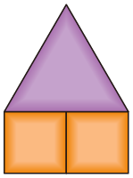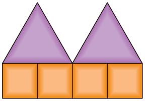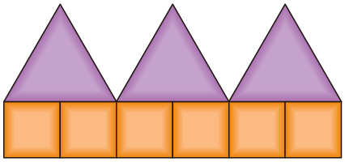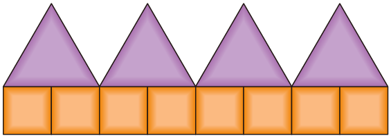 -
1 다음에 이어질 알맞은 모양을 붙여 보세요.
준비물 1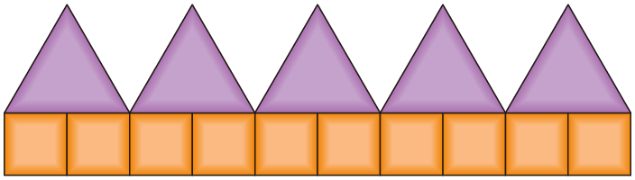 -
2 삼각형의 수와 사각형의 수 사이의 관계를 생각하며 안에 알맞은 수를 써넣으세요.
-
삼각형이 10개일 때 필요한 사각형의 수는개 입니다.20
-
삼각형이 30개일 때 필요한 사각형의 수는개 입니다.60
-
-
3 사각형이 100개일 때 삼각형은 몇 개가 필요할까요?
개50 -
4 삼각형의 수와 사각형의 수 사이의 대응 관계를 써 보세요.
예삼각형의 수를 2배 하면 사각형의 수와 같습니다.예사각형의 수를 2로 나누면 삼각형의 수와 같습니다. -
5 교실에서 대응 관계가 있는 것을 찾아 써 보세요.
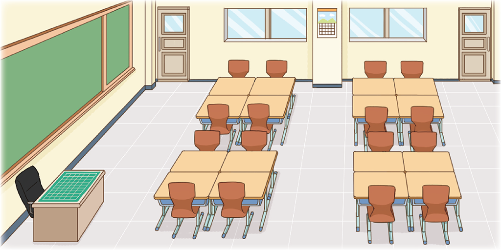예학생 책상의 수는 모둠 수의 4배입니다.예학생 의자의 수는 모둠 수의 4배입니다.예책상의 수는 의자의 수와 같습니다. -
1~3 사각형과 삼각형으로 규칙적인 배열을 만들고 있습니다. 물음에 답하세요.
준비물 2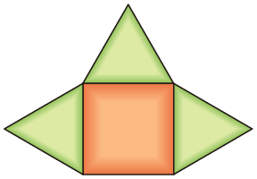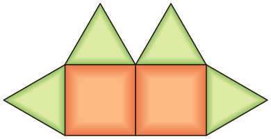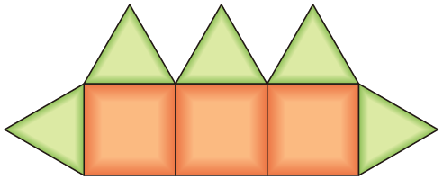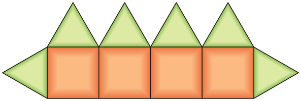······ -
1 배열에서 변하는 부분과 변하지 않는 부분을 생각하며, 사각형의 수와 삼각형의 수가 어떻게 변하는지 표를 이용하여 알아보세요.
사각형의 수(개) 1 2 3 45…… 삼각형의 수(개) 34567…… -
2 사각형이 10개일 때 삼각형은 몇 개가 필요할까요?
개12 -
3 사각형이 10개일 때 삼각형은 몇 개가 필요할까요?
예사각형의 수에 2를 더하면 삼각형의 수와 같습니다.예삼각형의 수에서 2를 빼면 사각형의 수와 같습니다. -
4~6 만화 영화를 1초 동안 상영하려면 그림이 25장 필요합니다. 만화 영화를 상영하는 시간과 필요한 그림의 수 사이에는 어떤 대응 관계가 있는지 알아보세요.
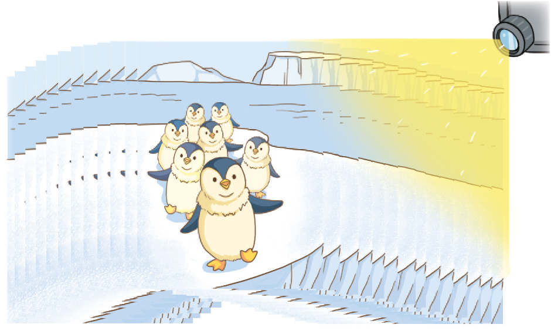 -
4 만화 영화를 상영하는 시간과 필요한 그림의 수 사이에는 어떤 대응 관계가 있는지 표를 이용하여 알아보세요.
시간(초) 1 2 3 456…… 그림의 수(장) 255075100125150…… -
5 만화 영화를 10초 상영하려면 그림이 몇 장 필요할까요?
장250 -
6 만화 영화를 상영하는 시간과 필요한 그림의 수 사이의 대응 관계를 써 보세요.
예만화 영화를 상영하는 시간에 25를 곱하면 만화 영화를 상영할 때 필요한 그림의 수와 같습니다.예필요한 그림의 수를 25로 나누면 만화 영화를 상영하는 시간과 같습니다.